X901–X1000¶
Star-Named Centers, Ehrmann Points & Anticomplements
Star-named centers (Agena, Achernar, Algenib, Alcor), Ehrmann points, anticomplements, and midpoints of classical triangle centers.
X901–X1000 (Star-Named Centers, Ehrmann Points & Anticomplements) — 16 representative centers (from 100 in collection) constructed on acute reference triangle \((a, b, c) = (5, 6, 7)\) with unit baseline AB = \(1\).¶
X901ISOGONAL CONJUGATE OF X900
X901 is the isogonal conjugate of X900.
X902CROSSPOINT OF X6 AND X106
X902 is the crosspoint of X6 and X106.
X903-BLAIKIE TRANSFORM OF X2
James Blaikie (1847-1929) proposed the following problem. Let O be any point in the plane of triangle ABC, and let any straight line g through O meet BC in P, CA in Q, AB in R; then, if points P', Q', R' be taken on the line so that PO = OP', QO = OQ', RO = OR'. Prove that AP', BQ', CR' concur.
X904-HIRST INVERSE OF X256
X904 is the X238-hirst inverse of X256.
X905POINT ACHERNAR
X905 = X92-isoconjugate of X692
X906INTERSECTION OF LINES X100X_112 AND X101X_109
X906 = X92-isoconjugate of X513
X907POINT ACRUX
X907 = isogonal conjugate of X3800

X908POINT ACUBENS
X908 = crosssum of X41 and X902
X909POINT ADHAFERA
X909 = trilinear pole of line X31X663

X910CROSSPOINT OF X57 AND X105
X910 is the crosspoint of X57 and X105.
X911POINT ADHARA
X911 = barycentric product X1*X103
X912-CEVA CONJUGATE OF X3
As the isogonal conjugate of a point on the circumcircle, X912 lies on the line at infinity.
X913POINT AGENA
X913 = isogonal conjugate of X914
X914ISOGONAL CONJUGATE OF X913
X914 is the isogonal conjugate of X913.
X915ISOGONAL CONJUGATE OF X912
X915 is the isogonal conjugate of X912.
X916-CEVA CONJUGATE OF X3
As the isogonal conjugate of a point on the circumcircle, X916 lies on the line at infinity.
X917-CROSS CONJUGATE OF X4
X917 = isogonal conjugate of X916
X918ISOTOMIC CONJUGATE OF X666
As the isogonal conjugate of a point of the circumcircle, X918 lies on the line at infinity.
X919ISOGONAL CONJUGATE OF X918
X919 is the isogonal conjugate of X918.
X920-CEVA CONJUGATE OF X1
X920 = isogonal conjugate of X921
X921ISOGONAL CONJUGATE OF X920
X921 is the isogonal conjugate of X920.
X922POINT ALBALI
X922 = trilinear product of PU(107)
X923POINT ALBIREO
X923 = barycentric product X1*X111

X924CROSSDIFFERENCE OF X5 AND X6
As the isogonal conjugate of a point on the circumcircle, X924 lies on the line at infinity.
X925ANTICOMPLEMENT OF X136
X925 is the anticomplement of X136.
X926CROSSDIFFERENCE OF X6 AND X7
As the isogonal conjugate of a point on the circumcircle, X926 lies on the line at infinity.
X927ISOGONAL CONJUGATE OF X926
X927 is the isogonal conjugate of X926.
X928CROSSDIFFERENCE OF X6 AND X11
As the isogonal conjugate of a point on the circumcircle, X928 lies on the line at infinity.
X929ISOGONAL CONJUGATE OF X928
X929 is the isogonal conjugate of X928.
X930ANTICOMPLEMENT OF X137
X930 is the anticomplement of X137.
X931POINT ALCHIBA
X931 = trilinear pole of line X6X21
X932-CROSS CONJUGATE OF X100
X932 = X190-cross conjugate of X100
X933-CROSS CONJUGATE OF X250
Let P be a point on the circumcircle, and let
(Oab) = circle through A tangent to line BC at B
(Oac) = circle through A tangent to line BC at C
Ba = point other than A where the line PB meets (Oab)
Ca = point other than A where the line PC meets (Oac)
Hab = orthocenter of APBa
Hac = orthocenter of APCa
X934-CROSS CONJUGATE OF X57
X934 = X513-cross conjugate of X57
X935POINT ALCOR
X935 = trilinear pole of line X6X67 (the radical axis of the orthocentroidal circle and Dao-Moses-Telv circle)
X936INTERSECTION OF LINES X1X_2 AND X3X_9
X936 = complement of X938
X937ISOGONAL CONJUGATE OF X936
X937 is the isogonal conjugate of X936.
X938ANTICOMPLEMENT OF X936
X938 is the anticomplement of X936.
X939ISOGONAL CONJUGATE OF X938
X939 is the isogonal conjugate of X938.
X940POINT ALDEBARAN
X940 = crosssum of X11 and X784
X941ISOGONAL CONJUGATE OF X940
X941 is the isogonal conjugate of X940.
X942INCIRCLE-INVERSE OF X36
X942 is the incircle-inverse of X36.
X943ISOGONAL CONJUGATE OF X942
X943 is the isogonal conjugate of X942.
X944HOFSTADTER TRAPEZOID POINT
X944 is the point in which the extended legs X4X1 and X3X8 of the trapezoid X4X1X3X8 meet. The point is introduced in
X945ISOGONAL CONJUGATE OF X944
X945 is the isogonal conjugate of X944.
X946MIDPOINT OF X1 AND X4
X946 is the midpoint of X1 and X4.
X947ISOGONAL CONJUGATE OF X946
X947 is the isogonal conjugate of X946.
X948INTERSECTION OF LINES X1X_4 AND X6X_7
X948 = crossdifference of every pair of points on line X652X926
X949ISOGONAL CONJUGATE OF X948
X949 is the isogonal conjugate of X948.
X950CROSSPOINT OF X8 AND X29
X950 is the crosspoint of X8 and X29.
X951ISOGONAL CONJUGATE OF X950
X951 is the isogonal conjugate of X950.
X952INTERSECTION OF X1X_5 AND X3X_8
As the isogonal conjugate of a point on the circumcircle, X952 lies on the line at infinity.
X953ISOGONAL CONJUGATE OF X952
For a construction of X953 involving the Euler line and X110, see Antreas Hatzipolakis and César Lozada, Hyacinthos 26050.
X954INTERSECTION OF LINES X1X_6 AND X3X_7
X954 = isogonal conjugate of X955
X955ISOGONAL CONJUGATE OF X954
X955 is the isogonal conjugate of X954.
X956INTERSECTION OF LINES X1X_6 AND X3X_8
X956 = X55-of-inner-Garcia-triangle
X957ISOGONAL CONJUGATE OF X956
X957 is the isogonal conjugate of X956.
X958INTERSECTION OF LINES X1X_6 AND X2X_12
X958 = complement of X388
X959ISOGONAL CONJUGATE OF X958
X959 is the isogonal conjugate of X958.
X960INTERSECTION OF LINES X1X_6 AND X5X_10
X960 = midpoint of X1 and X72
X961ISOGONAL CONJUGATE OF X960
X961 is the isogonal conjugate of X960.
X962LONGUET-HIGGINS POINT
X962 is the radical center of the circles centered at A, B, C, with respective
X963ISOGONAL CONJUGATE OF X962
X963 is the isogonal conjugate of X962.
X964INTERCEPT OF EULER LINE AND LINE X6X_8
As a point on the Euler line, X964 has Shinagawa coefficients \((2(E + F)^{2} + 2(E + F) \$bc\$ + abc \$a\$, 2S^{2})\).
X966INTERSECTION OF LINES X2X_6 AND X4X_9
X966 = tripolar centroid of X623
X967ISOGONAL CONJUGATE OF X966
X967 is the isogonal conjugate of X966.
X968POINT ALDERAMIN
X968 = crossdifference of every pair of points on line X661X905
X969INTERSECTION OF LINES X10X_69 AND X19X_81
X969 = trilinear pole of line X661X905
X970CENTER OF THE APOLLONIUS CIRCLE
The Apollonius circle is described at X181 as the circle tangent to the three excircles and encompassing them. That X970 is its center was noted on New Year’s Day, 2002, by Paul Yiu. (Hyacinthos #4619-4623)
X971INTERSECTION OF LINES X3X_9 AND X4X_7
As the isogonal conjugate of a point on the circumcircle, X971 lies on the line at infinity.
X972ISOGONAL CONJUGATE OF X971
X972 is the isogonal conjugate of X971.
X9731st EHRMANN POINT
X973 = X442-of-orthic-triangle if ABC is acute
X9742nd EHRMANN POINT
X974 = midpoint of X125 and X185
X976INTERSECTION OF LINES X1X_2 AND X3X_38
X976 = isogonal conjugate of X977
X977ISOGONAL CONJUGATE OF X976
X977 is the isogonal conjugate of X976.
X978-CEVA CONJUGATE OF X1
X978 = isogonal conjugate of X979
X979-CROSS CONJUGATE OF X1
X979 = isogonal conjugate of X978
X980INTERSECTION OF LINES X1X_3 AND X2X_39
X980 = crossdifference of every pair of points on line X650X669
X981ISOGONAL CONJUGATE OF X980
X981 is the isogonal conjugate of X980.
X982INTERSECTION OF LINES X1X_3 AND X2X_38
X982 = isogonal conjugate of X983
X983ISOGONAL CONJUGATE OF X982
X983 is the isogonal conjugate of X982.
X984MIDPOINT OF X8 AND X192
X984 is the midpoint of X8 and X192.
X985ISOGONAL CONJUGATE OF X984
X985 is the isogonal conjugate of X984.
X986INTERSECTION OF LINES X1X_3 AND X8X_38
X986 = isogonal conjugate of X987
X987ISOGONAL CONJUGATE OF X986
X987 is the isogonal conjugate of X986.
X988INTERSECTION OF LINES X1X_3 AND X9X_39
X988 = isogonal conjugate of X989
X989ISOGONAL CONJUGATE OF X988
X989 is the isogonal conjugate of X988.
X990INTERSECTION OF LINES X1X_7 AND X3X_37
X990 = complement, wrt hexyl triangle, of X12717
X991INTERSECTION OF LINES X1X_7 AND X3X_6
The function p = (r + 4R)/s is the Tucker parameter for X991; see the preamble to X(13323.)
X993MIDPOINT OF X1 AND X63
X993 is the midpoint of X1 and X63.
X994ISOGONAL CONJUGATE OF X993
X994 is the isogonal conjugate of X993.
X995MIDPOINT OF X1 AND X43
X995 is the midpoint of X1 and X43.
X996INTERSECTION OF LINES X8X_58 AND X10X_56
X996 = trilinear pole of line X649X900
X997MIDPOINT OF X1 AND X200
X997 is the midpoint of X1 and X200.
X998ISOGONAL CONJUGATE OF X997
X998 is the isogonal conjugate of X997.
X999MIDPOINT OF X1 AND X57
X999 is the radical center of the mixtilinear incircles.
X1000ISOGONAL CONJUGATE OF X999
End of PART 1